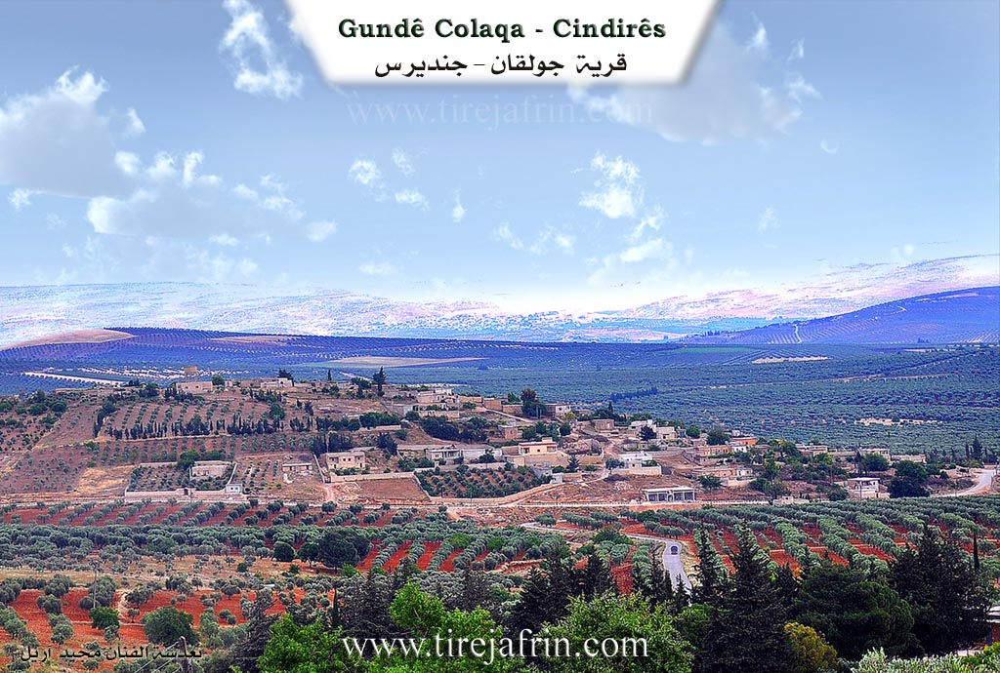
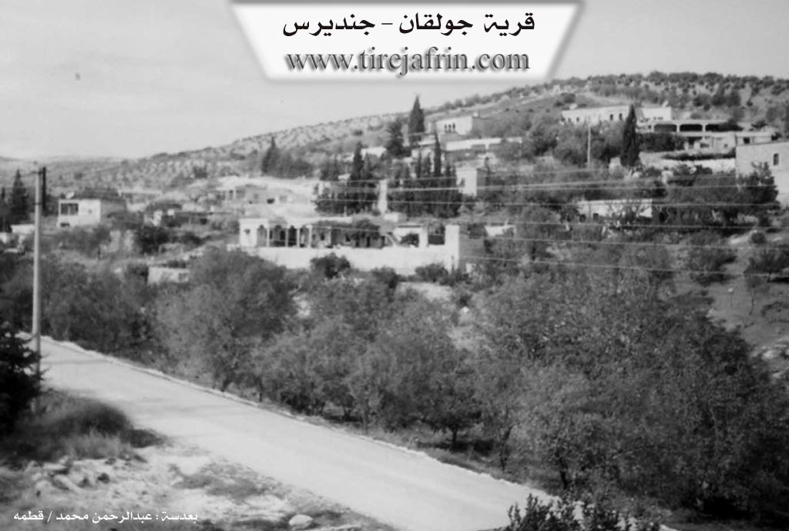

General Information
Nahiya (Subdistrict)
Cindires
Also Known As
Jalaq, Jolqan, Çeqalo, Çolaqa, جلق, جولقان, چولقان, جولوقو
Families, Clans, etc.
Bego, Beko, Beskê, Betal Axa, Biskî, Kerro, Koçer, Reşo, Rihanî, Rêhanî, Seydî Mêmo, Sîdo Mêmê, Sîdo Mîma, Xelîl Betal Sîdo Mêmê, Şêx Heyder, Şêxo, Şêxî
Photos


Basic Information about Çolaqa - Cindires
Source: Tirej Afrin
Etymology: Derived from the Kurdish word for "the one-armed" (çolaq). Named after an early settler named Çolaq who separated from the original cave dwellers to live near the village well.
Foundation Date/Period: Approximately 400 years ago
Springs: Kaniya Çolaqa
Shrines: Mazarê Şêx Ebdulrehman
Ruins: Four old villas of Sîdo Mêmê
Wells: Bîra Romî, Bîra Kewirkan
Other Landmarks: Geliyê Ĥeftar, Geliyê Sîlê
Summaries
I. Summary from TirejAfrin Site (English) of Çolaqa - Cindires
Source: https://www.tirejafrin.com/site/kura%20afrin%20Cindires%20-%20colaqa.htm
Etymology and Origins
According to the book Çiyayê Kurmênc (Efrîn): A Geographical Study by Dr. Mihemed Ebdo Elî: The name Çolaqa means "the one-armed" in Kurdish (çolaq). The early inhabitants lived in caves located north of the village. Later, one of them separated from the group; he was called "Çolaq" and settled beside the well at the current site of the village, so the village was named after him.
Geography and History
It is a medium-sized village where residential houses are spread along the sides of a deep valley called the Valley of the Hyena, or Geliyê Ĥeftar. It was a flourishing, beautiful, and important village in the early 20th century. It is inhabited by the Aghas of Sîdo Mêmê, serving as their main center, and some of their descendants still remain there. In the center of the village is an ancient archaeological well that still secures drinking water for the village and overflows during rainy years.
Location and Boundaries
According to the book Efrîn... Her River and Her Green Hills by Ebdulrehman Mihemed from the village of Qetme: Çolaqa is a village in Çiyayê Kurmênc, administratively belonging to the Cindirês district, Efrîn region, Heleb province. It is a small village situated on mountainous terrain at the confluence of several watercourses, including the stream and channel of the spring of Çolaqa. Its soil is calcareous clay. It is located 14 km northeast of the town of Cindirês.
It is bordered to the north by a high mountain chain planted with olive trees and grapevines, and the village of Îkî Axûr. To the south, it is bordered by the valley of Sîlê (planted with olive, walnut, and almond trees), the shrine of Şêx Ebdulrehman, and the village of Şêx Ebdulrehman. To the west, it is bordered by a high mountain chain planted with olive trees, and the villages of Xerzan and Eşkan Şerqî. To the east, it is bordered by a high mountain chain planted with olive trees, and the villages of Kewirkan and Qerebaş.
Infrastructure and Features
A watercourse passes through the center of the village, coming from the high north toward the south into the valley and plain of Cindirês. Water flows in it, and there is also an old Roman well (Bîra Romî) in the center of the village used by the residents for drinking. The number of houses is approximately 65, and the village is about 400 years old according to one of the elderly residents. The old houses are made of stone with flat wooden roofs, while modern cement houses have spread to the east and south.
The village has an electricity network and a water network connected to the well of Kewirkan. Previously, the village drank from the Roman well located within it. There is a primary school and an old mosque. It connects to the region and the district via a paved road that passes through its center to the neighboring villages. Administratively, it belongs to the municipality of Kewirkan.
Economy and Social Structure
Residents work in the cultivation of olives and grains through rain-fed farming, and irrigated fruit trees (such as walnuts and apricots) and summer vegetables via artesian wells, alongside raising sheep and goats. There are two olive presses located on the eastern side of the village.
The construction and founding of this village is attributed to a single family that inhabited it: the family of Xelîl Betal Sîdo Mêmê. They are the most famous in the Efrîn region and are the original owners of the village, evidenced by the presence of four old and luxurious villas belonging to them. Two of these are located on the eastern side of the village, and the other two are in the center; they are considered among the most beautiful remaining old buildings in the Efrîn area. The village is generally beautiful in terms of location, surrounded by trees and three mountain heights from all sides.
Notable People
Holders of higher degrees from the village include:
Hesen Şêxo (PhD in History / Russia)
Mihemed Husên (PhD in Veterinary Medicine / Russia)
Village Mukhtar: Mihemed Arif Osman
Sources
Book: جبل الكرد (عفرين) دراسة جغرافية Çiyayê Kurmênc (Efrîn): A Geographical Study by د. محمد عبدو علي Dr. Mihemed Ebdo Elî.
Book: عفرين .... نهرها وروابيها الخضراء Efrîn... Her River and Her Green Hills by عبدالرحمن محمد Ebdulrehman Mihemed from the village of Qetme.
Preparation and execution: Director of Tirej Efrîn site: Ebdulrehman Hacî Osman.
20/12/2013
II. Summary of Çolaqa - Cindires from Multi Channel
The village of Çolaqan, sometimes called Çolaqa, has a settlement history spanning 300 to 400 years in the region. The founding families originally migrated from territories located in modern Turkey. For generations, they did not build houses but lived in the nearby mountain caves, making their living by herding sheep and goats and producing charcoal in the dense forests. Approximately 150 to 180 years ago, a shepherd noticed a goat with a wet beard, leading to the discovery of a fresh water spring in the valley. Following this discovery, the families moved down from the caves and established the physical village of Çolaqan. The early stone houses were constructed by Armenian builders who worked for wages and temporarily lived alongside the villagers.
The name Çolaqan originates from an early ancestor of the Reşo family who had a paralyzed or crippled arm. In the Kurdish language, a person with this condition is referred to as çolaq, and the village was named in his honor.
The original inhabitants of Çolaqan are Kurds. The foundational families include Sîdo Mîma, Biskî, Rêhanî, Koçer, Şêxo, and Beko, the latter originating from the Îbiş Elî Beg lineage. As time passed, many landowners from the village moved to the nearby settlement of Şêx Ebdurehman, establishing it as an agricultural center, though the two villages maintain a deeply interconnected social fabric. Today, Çolaqan also hosts many displaced Arab families from Homs, Aleppo, and Hama, who live in harmony with the local population. The villagers also maintain strong brotherly relations with neighboring villages, such as Feqîran, where the residents are Êzîdî, while the people of Çolaqan are Muslim.
The village features an ancient plane tree known as Dara Çinarê, which is over 150 years old and stands near an old water source. North of the village lies a famous historic well called Bîra Coran, situated on the lands of the Nebî Reşo family. The village itself is divided by the Şêx Ebdurehman river valley.
Çolaqan is renowned for its historic architecture, including the 140 year old stone home of Henan Axa, characterized by its high arched windows. The village mosque was built in 1958 at the personal expense of a woman from the Sîdo Mîma family. Furthermore, Çolaqan holds historical prestige in education. Its primary school, established in 1948 through a grassroots community effort, served as a central educational hub for over twenty surrounding villages, including Kevir Delê Jêrîn, Kevir Delê Jorîn, Kurkan, Feqîran, Xerzan, Aşkan, Çeqela, and Qicûman. The early teachers were Arab educators who lived among the villagers, leading to long standing social ties and intermarriages. Today, the village relies primarily on agriculture, cultivating olives, walnuts, almonds, and sumac.
II. Summary of Çolaqa - Cindires from Multi Channel 2
The documentary provides an oral history of the village of Çolaqa, located in the Afrin region of Çiyayê Kurmênc. According to local residents Mirad, Ednan, and the village mukhtar Ebdilrehman, who is also known as Ebû Hisên, the settlement was established approximately 300 to 400 years ago. The original inhabitants did not live in constructed houses but resided in natural caves located in a rocky, wooded area just behind the current village layout. Over time, the families emerged from these caves and settled together after discovering a spring among the rocks. The village derives its name from a historical figure who had a crippled or crooked hand and was thus referred to as Çolaq.
The social structure of Çolaqa is built around several large families rather than broader tribal confederations. The prominent families include Seydî Mêmo, Rihanî, Şêx Heyder, Bego, Betal Axa, Kerro, Beskê, and Şêxî. The Seydî Mêmo family is particularly noted as a wealthy leadership lineage. A historical leader from this family, Xelîl Axa, is remembered as a wise and prominent figure who helped guide the community. Local leaders played a crucial role in developing the village infrastructure. For instance, the village school and mosque were built by them in the year nineteen fifty eight, long before surrounding villages had such facilities. The village was also known for its hospitality, featuring a large guest house where visitors were welcomed. The community actively celebrates religious holidays such as Qurbanê, also known as Eyda El Etha, by sharing traditional meals like mensef and distributing food to the poor.
At the center of Çolaqa stands a massive, ancient plane tree that is estimated to be over 300 years old. This tree serves as a gathering place for the community where weddings and celebrations are held. Next to this tree is a historic well that cost three hundred dinars to construct in the past. Before this well was dug, villagers had to travel to other locations to water their livestock. The well served the entire village until nineteen eighty six, when a resident bought a dynamo and connected it to the newly arrived electricity grid, pumping water directly to homes and inspiring other villagers to do the same.
Çolaqa is renowned for its agriculture, particularly its olive groves, vineyards, and apricot orchards. The village boasts a strong tradition of professional achievement. Several prominent individuals originated from the village, including doctors and engineers who studied and settled in Elmanya, such as Mistefa Sîdo Mêmê, Xelîl Sîdo Mêmê, and Rifat Umer Zênelûş. Another notable figure was Kemal Cemîl Axa, an actor who appeared on television and in films before moving abroad. The famous singer Cemîl Horo also lived in the village with his parents. Additionally, Ebû Goran became a well known public official, serving as the General Manager of Military Housing in Şam. The village maintains a deep connection to its heritage, preserving antique household items, traditional copper wares, and old musical instruments like the tembûr.
II. Ax û Walat Book 1
33
THE VILLAGE OF ÇOLAQA
7/7/2016
The village of Çolaqa is one of the villages of the Cindirêsê district, located 14 km east of the city of Cindirêsê and 16 km west of the city of Efrînê.
The name of the village of Çolaqa comes from the name of a one-armed person named Ehmed Hemzeyê Reşo; he was the first person to reside in the village.
Previously, the inhabitants of the village resided in caves behind the village on the west side. Later, due to the emergence of water, meaning the discovery of the Bîrkinikê spring, the people came and settled around it, building their houses.
34
There are 11 families in the village:
The family of Çolêq, Seydê Mêmo, Bego, Rihanê, Şêx Heyder, Mihemedê Şêxê, Zên Elûş, Oskoçer, Hisên Tirko, Ne’sî Hemkê and the family of Taşê. All families are Kurdish.
Nearly 80 houses and around 700 people live in the village.
It is worth mentioning that about 25 KIRÎF families used to live in the village of Çolaqa, but 40 years ago they moved to Efrîn and Cindirêsê.
To the east of the village is the Qerqînê mountain, where there is a shrine. To the south is the Cûmê plain. To the southwest is the Kurkê mountain. To the west are the Simaqlî mountain and the village of Xerza, and to the north are Xirabê Bego and the Heftêr valley.
The village of Çolaqa is famous for its abundance of caves, so many caves still remain, such as the Xezalê cave and the Elqurmê cave to the north of the village, the Mamirî cave to the south, and the Ketî cave to the east. Also, in every house, there is a cave that is still used for keeping livestock and their food.
The Şirikê spring and the Jorîn well are in the north; the people of the village got their water from there and watered their sheep from it.
There is an old primary school in the village, built in 1951, and the children of Çolaqa and the surrounding villages
35
studied there. There is a mosque and a room that served as the village's meeting place in the village. There were 2 old olive oil presses in the village; these presses belonged to Betal Axa.
The people of the village make their living from agriculture, and primarily from cultivating fields of olive trees, along with fruit trees such as walnuts, almonds, grapes, apricots. Alongside them, the villagers also plant grain fields with wheat, barley, lentils, and chickpeas.
Along with agriculture, some families keep and own livestock such as sheep, goats, and cows.
In terms of industry, there is a sewing workshop in the village where about 15 people work. There are 3 chicken farms in the village and some families work in them, and there are 4 various shops in the village.
About 20 people work in various workshops in the cities of Efrîn and Cindirêsê.
More than 10 people also work as employees in the institutions and bodies of the Autonomous Administration.
36
There are 6 martyrs from the village:
Martyr Sîpan, Zinar Efrîn, Bedirxan, Doxan Botan, Ferîde and martyr Mistefa Ebdo. The village commune has been named after Martyr Sîpan.
It is worth mentioning that the famous singer (Cemîl HORO) lived in the village of Çolaqa with his family for about 30 years until 1962, after which he moved to the city of Helebê.
Engineer (Ebdilrehman Ehmed) was a high-ranking employee in the city of Helebê, and he brought electricity to his village and the surrounding villages.
Xelîlê Seydê Mêmo, known as (Xelîl Axa), in 1954 became the first Kurdish parliamentarian in the Syrian parliament. At his invitation, in 1955, the former president of Syria, Şukrî QUWETLÎ, visited the village of Çolaqa.
37
Due to the presence of Xelîl Axa, who had great authority, about 13 villages were attached to him. Opportunities opened up for the emergence of many professions, and many shops, a tavern, a butcher, a shoemaker, horsemen, and tractors were in the village.
A doctor named (Enwer) from the year (1955 to 1957) opened a clinic in the village and traveled to the villages to treat the sick, then he moved and went to Helebê.
A person named Îbikê Umkêlê, along with several of his friends, during the time of French rule over Syria, would go to the village of Hemamê to fight and resist against the French occupiers and would return to their village.
Transcriptions and Subtitles
| Source | Video | Subtitles | Transcript |
|---|---|---|---|
| Multi Channel 1 | Watch Video | Download SRT | View Transcript |
| Multi Channel 2 | Watch Video | Download SRT | View Transcript |
Foundation/Origin Information of Çolaqa - Cindires
Its first inhabitants lived in caves north of the village. One of them, called "Çolaq," separated and lived by the well at the current village site. The construction is also attributed to the family of Khalil Batal Sido Mimi.
Source: TirejAfrin Site
Possible Village Name Meaning of Çolaqa - Cindires
"Çolaq" means "the lame" in Kurdish.
Source: TirejAfrin Site
V. Links
- Tirej Afrin:
https://www.tirejafrin.com/site/kura%20afrin%20Cindires%20-%20colaqa.htm - Ax û Welat:
https://www.youtube.com/watch?v=xUA3t3GCwmk - Jawlat:
https://www.youtube.com/watch?v=ITDAPDF0CAU - Video:
https://www.youtube.com/watch?v=OjYaQDBGZwE - Link:
https://www.youtube.com/watch?v=pd9IA-sSbLw - Link:
https://www.youtube.com/watch?v=0uGnlBWw9mk